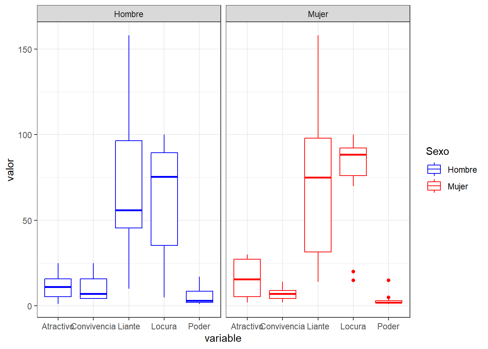
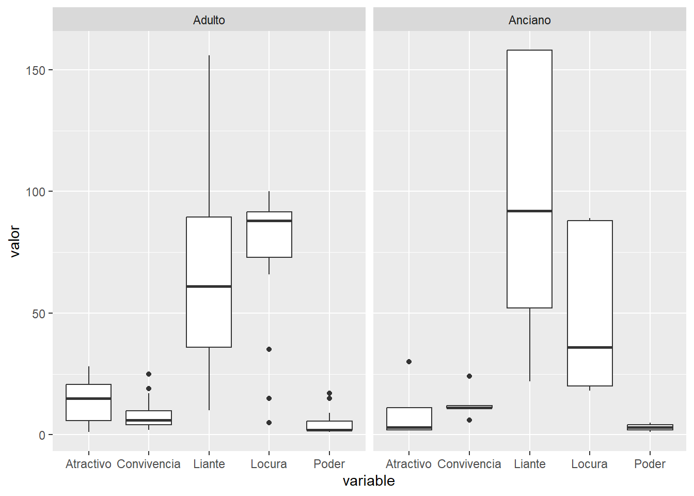

library(tidyverse)SAA Práctica 0: Resumen estadístico
Requisitos previos:
Para la realización de la práctica, es necesario haber estudiado la sección “resumen estadístico”
Organizad 3 grupos según el fichero: datos curintel
3.1 Crea un data frame a partir del fichero csv
lqsa <- read_csv("https://raw.githubusercontent.com/jesusturpin/curintel2324/main/data/lqsa.csv")3.2 Crea un histograma para cada una de las variables y explica brevemente la distribución de los datos. Utiliza los parámetros bins o binwidth apropiadamente teniendo en cuenta el tamaño del dataset.
lqsa %>%
select_if(is.numeric) %>%
gather(key = "variable", value = "valor") %>%
ggplot(aes(valor))+
geom_histogram(bins = 7)+
facet_wrap(~variable, scales = "free", ncol = 2)+
theme_bw()3.3 Calcula la media y la mediana para todas las variables numéricas.
lqsa %>%
select_if(is.numeric) %>%
gather(key = "variable", value = "valor") %>%
group_by(variable) %>%
summarize(media = mean(valor))# A tibble: 5 × 2
variable media
<chr> <dbl>
1 Atractivo 13.1
2 Convivencia 9.27
3 Liante 73
4 Locura 70.1
5 Poder 4.533.4 Calcula la moda para todas las variables numéricas y categóricas
lqsa %>%
select(-Nombre, -Motes) %>%
lapply(DescTools::Mode)$Poder
[1] 2
attr(,"freq")
[1] 9
$Convivencia
[1] 4
attr(,"freq")
[1] 5
$Liante
[1] 36 56 70 86 100 110 158
attr(,"freq")
[1] 2
$Atractivo
[1] 2
attr(,"freq")
[1] 4
$Locura
[1] 88 90 100
attr(,"freq")
[1] 3
$Grupo_edad
[1] "Adulto"
attr(,"freq")
[1] 24
$Sexo
[1] "Hombre" "Mujer"
attr(,"freq")
[1] 143.5 Dibuja un diagrama de tarta para todas las variables categóricas
freqs <- table(lqsa$Sexo)
freqs
Hombre Mujer Otro
14 14 2 pie(freqs, labels = names(freqs), main = "Distribución por Sexo")ggplot(lqsa, aes(x = factor(1), fill = Sexo)) +
geom_bar(width = 1) +
coord_polar(theta = "y") +
labs(title = "Distribución por Sexo")lqsa %>%
select(Grupo_edad) %>%
group_by(Grupo_edad) %>%
summarise(freq = n()) %>%
ggplot(aes(x = "", y = freq, fill = Grupo_edad)) +
geom_bar(stat = "identity") +
coord_polar(theta = "y") +
labs(title = "Distribución por Grupo_edad")lqsa %>%
mutate(Categoria = paste(Sexo, Grupo_edad, sep = "-")) %>%
ggplot(aes(x = factor(1), fill = Categoria)) +
geom_bar(width = 1) +
coord_polar(theta = "y") +
labs(title = "Distribución por Sexo y Grupo de edad")3.6 ¿Qué variable numérica presenta mayor varianza?
lqsa %>%
select_if(is.numeric) %>%
gather(key = "variable", value = "valor") %>%
group_by(variable) %>%
summarize(varianza = var(valor)) %>%
arrange(desc(varianza))# A tibble: 5 × 2
variable varianza
<chr> <dbl>
1 Liante 1928.
2 Locura 915.
3 Atractivo 86.2
4 Convivencia 38.2
5 Poder 24.33.7 Calcula el rango para todas las variables numéricas
lqsa %>%
select_if(is.numeric) %>%
lapply(range)$Poder
[1] 1 17
$Convivencia
[1] 2 25
$Liante
[1] 10 158
$Atractivo
[1] 1 30
$Locura
[1] 5 1003.8 Calcula el IQR para todas las variables numéricas
mi_iqr <- function(x) {
return(quantile(x, 0.75)-quantile(x))
}lqsa %>%
select_if(is.numeric) %>%
lapply(IQR)$Poder
[1] 2.75
$Convivencia
[1] 7.75
$Liante
[1] 60
$Atractivo
[1] 14
$Locura
[1] 363.9 Averigua manualmente, a partir del IQR si existen Outliers
hay_outliers_inf <- function(x, k=1.5) {
out_inf <- quantile(x, 0.25) - k*IQR(x)
#out_sup <- quantile(x, 0.75) + k*IQR(x)
return(any(x < out_inf)) #| x > out_sup))
}
hay_outliers_sup <- function(x, k=1.5) {
#out_inf <- quantile(x, 0.25) - k*IQR(x)
out_sup <- quantile(x, 0.75) + k*IQR(x)
return(any(x > out_sup)) #| x > out_sup))
}hay_outliers <- function(x, k=1.5) {
out_inf <- quantile(x, 0.25) - k*IQR(x)
out_sup <- quantile(x, 0.75) + k*IQR(x)
return(any(x < out_inf | x > out_sup))
}lqsa %>%
select_if(is.numeric) %>%
lapply(hay_outliers_inf)$Poder
[1] FALSE
$Convivencia
[1] FALSE
$Liante
[1] FALSE
$Atractivo
[1] FALSE
$Locura
[1] FALSElqsa %>%
select_if(is.numeric) %>%
lapply(hay_outliers_sup)$Poder
[1] TRUE
$Convivencia
[1] TRUE
$Liante
[1] FALSE
$Atractivo
[1] FALSE
$Locura
[1] FALSEoutliers <- function(x, k=1.5) {
out_inf <- quantile(x, 0.25) - k*IQR(x)
out_sup <- quantile(x, 0.75) + k*IQR(x)
return(c(x[x< out_inf], x[x>out_sup]))
}lqsa %>%
select_if(is.numeric) %>%
lapply(outliers)$Poder
[1] 9 15 17 15 17
$Convivencia
[1] 24 25
$Liante
numeric(0)
$Atractivo
numeric(0)
$Locura
numeric(0)3.10 Representa en una sola gráfica, los diagramas de caja y bigote de todas las variables numéricas
lqsa# A tibble: 30 × 9
Nombre Motes Poder Convivencia Liante Atractivo Locura Grupo_edad Sexo
<chr> <chr> <dbl> <dbl> <dbl> <dbl> <dbl> <chr> <chr>
1 Ongombo Mond… 9 17 36 23 35 Adulto Homb…
2 Violeta La c… 3 2 30 12 100 Adulto Mujer
3 Javi El p… 15 4 56 16 95 Adulto Homb…
4 Estela Reyn… La p… 2 3 154 28 100 Adulto Mujer
5 La chusa La c… 3 5 18 16 99 Adulto Mujer
6 Vicente El h… 2 24 52 11 18 Anciano Homb…
7 Enrique Pas… Seño… 17 8 44 5 5 Adulto Homb…
8 Amador Capi… 3 5 70 20 90 Adulto Homb…
9 Doña Fina La v… 5 11 158 2 88 Anciano Mujer
10 Berta La b… 15 9 14 16 15 Adulto Mujer
# ℹ 20 more rowslqsa %>%
select(-Motes, -Grupo_edad, -Sexo) %>%
pivot_longer(cols = -Nombre, names_to = "variable", values_to = "valor") %>%
ggplot(aes(x=variable, y = valor)) +
geom_boxplot() +
theme_bw()4. Análisis exploratorio: Filtros por categorías
Repite el apartado 3.10 filtrando por categorías y explica las diferencias obtenidas
orden_colores <- c("Mujer" = "red", "Hombre" = "blue")
lqsa %>%
select(-Motes, -Grupo_edad) %>%
filter(Sexo != "Otro") %>%
pivot_longer(cols = -c(Nombre, Sexo), names_to = "variable", values_to = "valor") %>%
ggplot(aes(x=variable, y = valor, color = Sexo)) +
geom_boxplot() +
facet_wrap(~Sexo) +
scale_color_manual(values = orden_colores) +
theme_bw()
lqsa %>%
select(-Motes, -Sexo) %>%
filter(Grupo_edad != "Niño") %>%
pivot_longer(cols = -c(Nombre, Grupo_edad), names_to = "variable", values_to = "valor") %>%
ggplot(aes(x=variable, y = valor)) +
geom_boxplot() +
facet_wrap(~Grupo_edad)